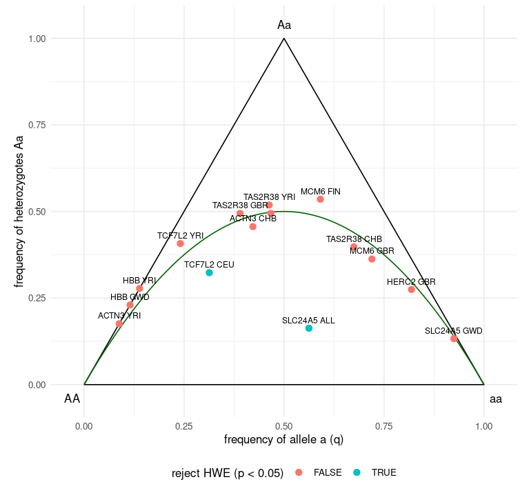

Exercise in R: Hardy–Weinberg equilibrium
Goal
By the end of this exercise you should be able to:
- write a function
hwe_test(nAA, nAa, naa)that returns p, the expected counts, χ², the p-value and F as a one-row tibble; - apply it to every row of a table of real genotype counts with
pmap, and spread the results into columns withunnest; - draw a de Finetti triangle with ggplot2;
- compute carrier frequencies and the effect of inbreeding for many values at once.
Before you start
This page builds on the by-hand part of the Exercise, so do that first. You need the packages dplyr, purrr, tidyr, readr and ggplot2. Download hwe_snps.csv and save it in a data/ folder of your R project.
The file holds genotype counts for 7 SNPs in 1000 Genomes phase 3 populations, downloaded from the Ensembl REST API (release 116, endpoint /variation/human/<rsid>?population_genotypes=1) on 20 November 2026. allele_A is the reference allele on the forward strand of GRCh38 and allele_a the other allele; the source column records the query. Population codes: GBR British, FIN Finnish, CEU Utah residents of north-west European ancestry, YRI Yoruba, GWD Gambian, CHB Han Chinese, ALL all 26 populations pooled.
Tasks
New idiom today: pmap. In Extensions to Mendel you used map_dbl(xs, f) to call a function once for each element of one list. pmap(list(a, b, c), f) walks along several vectors in parallel and calls f(a[1], b[1], c[1]), then f(a[2], b[2], c[2]), and so on. Inside mutate, the vectors are columns, so pmap calls f once per row. If f returns a one-row tibble, the result is a list-column of tibbles, which tidyr::unnest spreads into ordinary columns.
library(dplyr)
library(purrr)
library(tidyr)
library(readr)
library(ggplot2)A function for the HWE test
R1. Write hwe_test(nAA, nAa, naa). It should compute N, p, the three expected counts, χ², the p-value with pchisq(chisq, df = 1, lower.tail = FALSE), and F = 1 − Hobs/Hexp, and return them as a one-row tibble. Test it on the MN blood group sample (1787, 3039, 1303) and on the “excess heterozygotes” preset of the demo at N = 200 (40, 140, 20), and compare with the exercise.
hwe_test <- function(nAA, nAa, naa) {
n <- nAA + nAa + naa
p <- (2 * nAA + nAa) / (2 * n)
q <- 1 - p
obs <- c(nAA, nAa, naa)
expd <- n * c(p^2, 2 * p * q, q^2)
chisq <- sum((obs - expd)^2 / expd)
tibble(n = n, p = p,
exp_AA = expd[1], exp_Aa = expd[2], exp_aa = expd[3],
chisq = chisq,
p_value = pchisq(chisq, df = 1, lower.tail = FALSE),
F = 1 - (nAa / n) / (2 * p * q))
}
hwe_test(1787, 3039, 1303) # MN blood group
hwe_test(40, 140, 20) # excess heterozygotesMany SNPs at once
R2. Read data/hwe_snps.csv. Use pmap inside mutate to run hwe_test on every row, and unnest the result. Show gene, population, N, p, χ², the p-value and F, rounded. Which SNP–population pairs depart from HWE at the 5% level?
snps <- read_csv("data/hwe_snps.csv")
snps |> select(rsid, gene, population, n_AA, n_Aa, n_aa)
results <- snps |>
mutate(test = pmap(list(n_AA, n_Aa, n_aa), hwe_test)) |>
unnest(test)
results |>
select(gene, population, n, p, chisq, p_value, F) |>
mutate(across(c(p, chisq, F), \(x) round(x, 3)),
p_value = format.pval(p_value, digits = 2, eps = 1e-300))R3. Look more closely at the two kinds of departure. (a) For HBB (rs334, HbS), compare the observed and expected numbers of HbS homozygotes (n_aa and exp_aa). (b) List the rows with p < 0.05, with observed and expected heterozygotes. For each one, decide whether it is most likely chance, population structure, or selection. How many rejections at the 5% level would you expect among 15 tests if every population were in HWE?
results |> filter(gene == "HBB") |> select(population, n_aa, exp_aa)
results |> filter(p_value < 0.05) |> select(gene, population, n_Aa, exp_Aa, F, p_value)A de Finetti triangle in ggplot2
R4. Draw the triangle, the HWE parabola and one point per SNP–population pair, at x = q and y = nAa/N. Colour the points by whether HWE is rejected. coord_fixed(ratio = sqrt(3) / 2) makes the triangle equilateral. check_overlap = TRUE drops labels that would overlap.
tri <- tibble(x = c(0, 1, 0.5, 0), y = c(0, 0, 1, 0))
parab <- tibble(q = seq(0, 1, by = 0.01), H = 2 * q * (1 - q))
pts <- results |>
mutate(q = 1 - p, H = n_Aa / n, label = paste(gene, population))
ggplot() +
geom_path(data = tri, aes(x, y)) +
geom_line(data = parab, aes(q, H), colour = "darkgreen") +
geom_point(data = pts, aes(q, H, colour = p_value < 0.05), size = 2.5) +
geom_text(data = pts, aes(q, H, label = label), size = 2.8, vjust = -0.8,
check_overlap = TRUE) +
annotate("text", x = c(-0.03, 1.03, 0.5), y = c(-0.04, -0.04, 1.04),
label = c("AA", "aa", "Aa")) +
coord_fixed(ratio = sqrt(3) / 2) +
labs(x = "frequency of allele a (q)", y = "frequency of heterozygotes Aa",
colour = "reject HWE (p < 0.05)") +
theme_minimal() + theme(legend.position = "bottom")Carriers and inbreeding
R5. Write carrier_freq(incidence) that returns 2pq for a recessive disease of a given incidence. Apply it to PKU (1/10 000), cystic fibrosis (1/2500) and a rare disease (1/100 000) in one call. Show the answers as “1 in …”.
carrier_freq <- function(incidence) {
q <- sqrt(incidence)
2 * q * (1 - q)
}
incidence <- c(PKU = 1/10000, CF = 1/2500, rare = 1/100000)
round(carrier_freq(incidence), 4)
round(1 / carrier_freq(incidence))R6. Make a tibble with q = 0.1, 0.01 and 0.001, and compute f(aa) under random mating and for a child of first cousins (F = 1/16), and their ratio. Compare with E3 in the exercise.
inbreeding <- tibble(q = c(0.1, 0.01, 0.001)) |>
mutate(random = q^2,
cousins = q^2 + (1/16) * (1 - q) * q,
ratio = cousins / random)
inbreedingSolutions
Run with Rscript --vanilla from the unit folder. Messages from loading packages and reading the CSV are not shown.
R1.
# A tibble: 1 × 8
n p exp_AA exp_Aa exp_aa chisq p_value F
<dbl> <dbl> <dbl> <dbl> <dbl> <dbl> <dbl> <dbl>
1 6129 0.539 1784. 3045. 1300. 0.0270 0.870 0.00210
# A tibble: 1 × 8
n p exp_AA exp_Aa exp_aa chisq p_value F
<dbl> <dbl> <dbl> <dbl> <dbl> <dbl> <dbl> <dbl>
1 200 0.55 60.5 99 40.5 34.3 0.00000000472 -0.414Both match the exercise: the MN sample is in HWE (χ² = 0.027, p = 0.87); the excess-heterozygote sample is not (χ² = 34.3, F = −0.41).
R2.
# A tibble: 15 × 6
rsid gene population n_AA n_Aa n_aa
<chr> <chr> <chr> <dbl> <dbl> <dbl>
1 rs713598 TAS2R38 GBR 33 45 13
2 rs713598 TAS2R38 YRI 30 56 22
3 rs713598 TAS2R38 CHB 13 41 49
4 rs1815739 ACTN3 GBR 26 45 20
5 rs1815739 ACTN3 CHB 36 47 20
6 rs1815739 ACTN3 YRI 89 19 0
7 rs7903146 TCF7L2 CEU 52 32 15
8 rs7903146 TCF7L2 YRI 60 44 4
9 rs4988235 MCM6 FIN 14 53 32
10 rs4988235 MCM6 GBR 9 33 49
11 rs12913832 HERC2 GBR 4 25 62
12 rs334 HBB YRI 78 30 0
13 rs334 HBB GWD 87 26 0
14 rs1426654 SLC24A5 GWD 1 15 97
15 rs1426654 SLC24A5 ALL 892 408 1204
# A tibble: 15 × 7
gene population n p chisq p_value F
<chr> <chr> <dbl> <dbl> <dbl> <chr> <dbl>
1 TAS2R38 GBR 91 0.61 0.14 0.708 -0.039
2 TAS2R38 YRI 108 0.537 0.197 0.657 -0.043
3 TAS2R38 CHB 103 0.325 0.893 0.345 0.093
4 ACTN3 GBR 91 0.533 0.004 0.949 0.007
5 ACTN3 CHB 103 0.578 0.433 0.511 0.065
6 ACTN3 YRI 108 0.912 1.00 0.316 -0.096
7 TCF7L2 CEU 99 0.687 6.12 0.013 0.249
8 TCF7L2 YRI 108 0.759 1.42 0.234 -0.114
9 MCM6 FIN 99 0.409 1.14 0.286 -0.107
10 MCM6 GBR 91 0.28 0.929 0.335 0.101
11 HERC2 GBR 91 0.181 0.507 0.476 0.075
12 HBB YRI 108 0.861 2.81 0.094 -0.161
13 HBB GWD 113 0.885 1.91 0.167 -0.13
14 SLC24A5 GWD 113 0.075 0.238 0.626 0.046
15 SLC24A5 ALL 2504 0.438 1121. 1.1e-245 0.669The rows for TAS2R38 CHB and TCF7L2 YRI match B1 and B2. Two rows are rejected at 5%: TCF7L2 in CEU (χ² = 6.1, p = 0.013) and SLC24A5 in the pooled sample of all populations (χ² = 1121, p ≈ 10−245). Every single-population sample of SLC24A5, HBB and the others is consistent with HWE.
R3.
# A tibble: 2 × 3
population n_aa exp_aa
<chr> <dbl> <dbl>
1 YRI 0 2.08
2 GWD 0 1.50
# A tibble: 2 × 6
gene population n_Aa exp_Aa F p_value
<chr> <chr> <dbl> <dbl> <dbl> <dbl>
1 TCF7L2 CEU 32 42.6 0.249 1.34e- 2
2 SLC24A5 ALL 408 1233. 0.669 1.08e-245- About 2 HbS homozygotes are expected in each sample and none is seen. The χ² test is not significant (expected counts are tiny), but the much larger gnomAD sample (Find it F3) shows the same deficit: selection against sickle-cell disease among sampled adults.
- SLC24A5 ALL: 408 heterozygotes where 1233 are expected, F = 0.67. This is population structure (the Wahlund effect): the A allele is near fixation in Europe and rare in Africa, and pooling them creates a huge apparent deficit. TCF7L2 CEU: probably chance. With 15 tests at the 5% level we expect 15 × 0.05 = 0.75 rejections even if all are in HWE, so one rejection at p = 0.013 is unremarkable. (A real population-wide test in a larger CEU sample would settle it.) This is the multiple-testing problem that GWAS solve with the 5 × 10−8 threshold, in Complex traits.
R4.

Most points sit on or near the parabola, spread along the whole range of q. The pooled SLC24A5 point lies far below the curve, and TCF7L2 CEU somewhat below it. The points for HbS (HBB) and ACTN3 in YRI sit near the left corner, where the allele a is rare.
R5.
PKU CF rare
0.0198 0.0392 0.0063
PKU CF rare
51 26 159PKU: 1 in 51 (the 1/50 of the pedigrees unit). CF: 1 in 26. A disease of incidence 1 in 100 000: 1 in 159. Note how slowly the carrier frequency falls: the incidence falls 10-fold from PKU to the rare disease, but the carrier frequency only about 3-fold, because carriers ≈ 2√incidence.
R6.
# A tibble: 3 × 4
q random cousins ratio
<dbl> <dbl> <dbl> <dbl>
1 0.1 0.01 0.0156 1.56
2 0.01 0.0001 0.000719 7.19
3 0.001 0.000001 0.0000634 63.4As in E3: the ratio is 1.56 at q = 0.1, 7.2 at q = 0.01, and 63 at q = 0.001. For very rare recessive diseases, a large share of affected children have related parents.
Where this leads
pmap + a function that returns a tibble is a general pattern: one analysis per row of a table. In Drift, selection we turn from testing a population at one moment to following p over many generations, with a for loop.